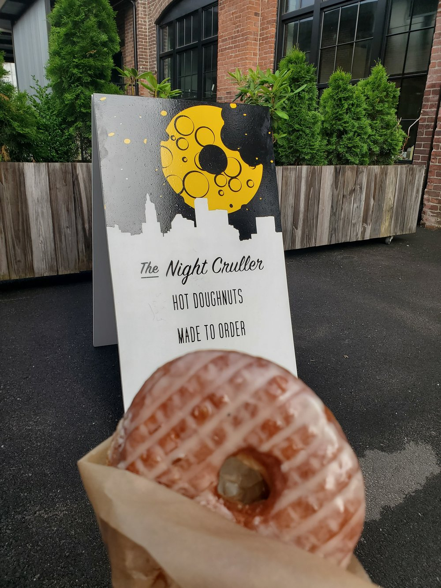
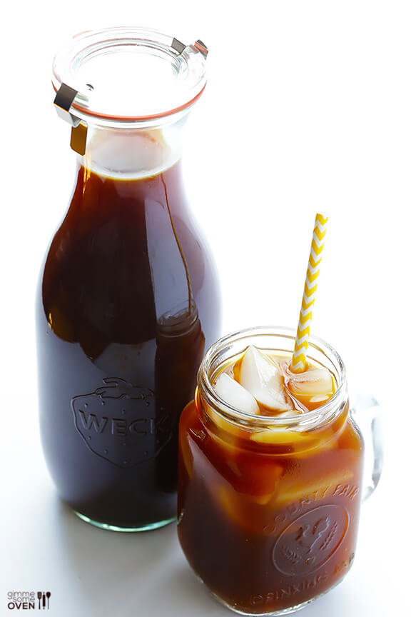

Here you will find general information, pictures and store updates.
During the summer I enjoy going out for a sweet treat. It is a summer staple to enjoy a nice donut breakfast or eat ice cream, before dinner! But I can never decide where to go! I thought that a website with all of my places would be helpful to other indecsive people!! I live in MASS but, spend most of my time in RI. Beacuase of this I included restaurants from both places.
Knead Recently Opened a Night Curller Window, serving fresh donuts from 6pm-9pm


Confectionary Designs now has coffee and cold brew!